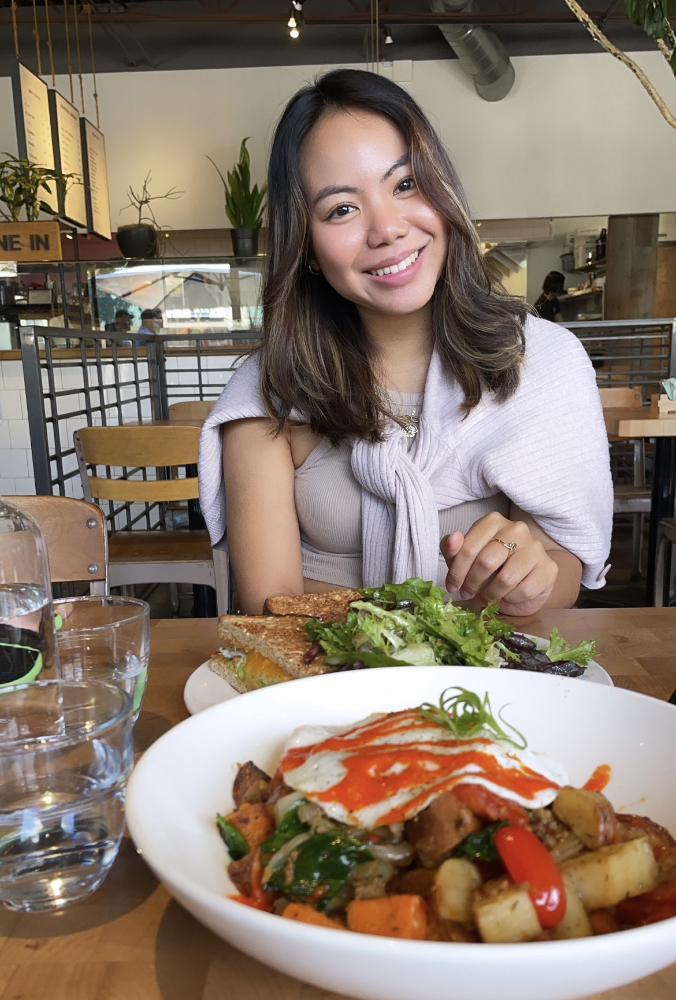
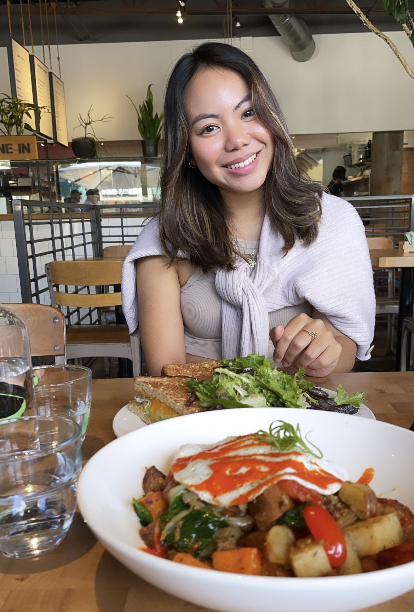
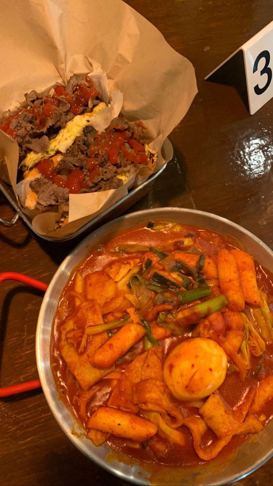
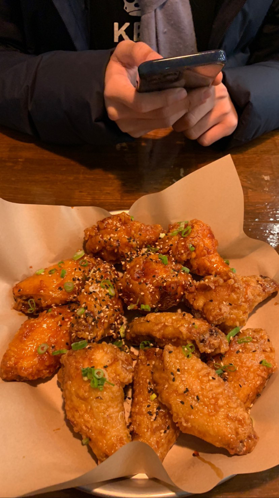
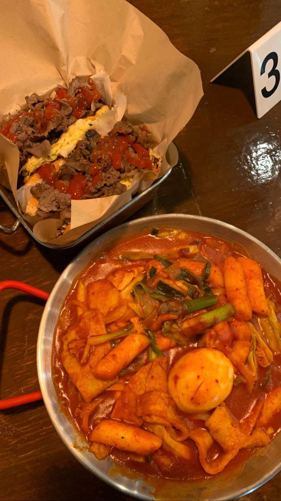
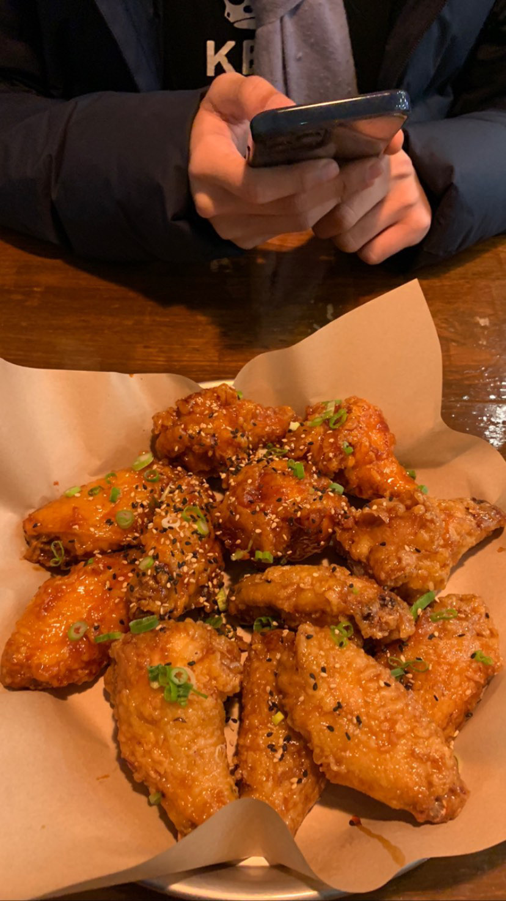
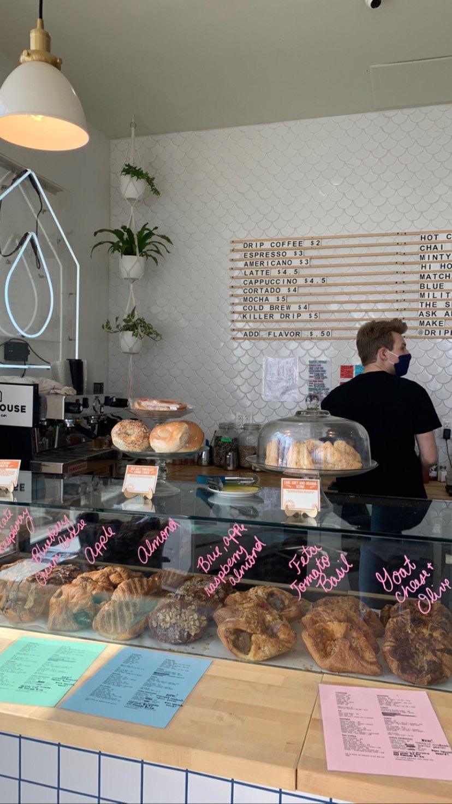
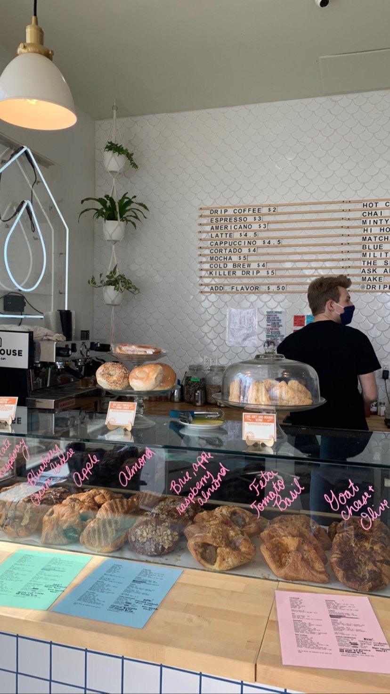

Welcome to Mai Bakes!
This is my little personal space on the internet where I will be sharing my food adventures, favorite recipes, and selling some of my creations! As a foodie, I truly believe that great knowledge about food is meant to be shared with the people we love.
Some of my food adventures...
Joe Muer Seafood, Detroit MI


For my 22nd birthday, my boyfriend took me to a fancy seafood restaurant in Detroit named Joe Muer Seafood. The overall experience was immaculate! The food and drinks were good, there was live classical music at the restaurant, and the view was Canada. Literally. For our appetizers, we ordered the lobster corn dog and a Boston clam chowder. The lobster corn dog was served with napa cabbage slaw and pommery hollandaise sauce. Let me just start by saying that it was one of the best appetizers I've ever had in my life! The lobster was perfectly cooked and the batter was crispy and delicious. For our main course meals, we ordered the shrimp and scallop linguine and the crab-stuffed atlantic flounder. Both dishes were SO good. I remember how buttery the flounder tasted as it was served with creamed spinach. And the pasta.. so good. It was also a little spicy, which definitely satisfied my Asian tastebuds. And of course, what's a birthday dinner without dessert? For dessert, we had the creme brulee and a piece of key lime pie.
Commonwealth Cafe, Birmingham MI
 

Coming from Kuala Lumpur which has many amazing brunch places, it was hard for me to accept the fact that Michigan didn't really have a good brunch cafe that impressed me with their food. That perception changed when I went to Commonwealth Cafe in Birmingham, Michigan. I was surprised at how good the food was here, and came back another time to try out different menu items!
Kimchi Box, Plymouth MI
 



When it comes to Korean food in Michigan, Kimchi Box is definitely my go-to! My favorite items from the menu are the Korean sassy wings, potato dogs, fish tacos, kimchi fries, and duk-bok-ki! I recently tried their new menu item which is the street toast with bulgogi, and that was pretty yummy too! I definitely recommend this place to those of you searching for some Korean comfort food. They also have branches in Sterling Heights, Novi and Auburn Hills. Visit their website here https://kimchiboxusa.com/.
Pacific Rim, Ann Arbor
During Ann Arbor restaurant week, my girlfriends and I went to Pacific Rim, a restaurant in downtown Ann Arbor that serves contemporary pan-Asian cuisine. As part of the chef's three-course menu, the first course I ordered was the pacific rim crabcake, which was made with Australian crabmeat and served with a cilantro-lime sauce and a spicy mango salsa. This meal was super yummy and I surprisingly liked the salsa as it complemented the crabcake really well. For the second course, I got the roasted winter squash soup. This soup was really creamy and delicious, packed with rich flavors that got me super excited for the next meal. And lastly, for the third course, I ordered the Korean-marinated ribeye, which was served with sesame crispy rice, sautéed julienned vegetables, quail egg and Korean chili sauce. The steak was definitely a good choice.. I loved it! The Korean chili sauce that tasted a lot like samjang (but I'm not 100% sure if it was) was surprisingly a good sauce for the steak. The only thing that I think could have been better was the sesame crispy rice. For some reason, it seemed as though the rice was undercooked for me - although it wasn't, it just had that crispy texture on the outside that made me perceive it to be undercooked. Overall, it was a 9/10 experience and I would definitely come back again to try the items on their regular menu!
Stray Hen Café
On one random weekday of the semester, I wanted to have brunch with my best friend Saiful, and so we decided to check out this new place called Stray Hen café located in the same building as YOUnion on East Washington Street, Ann Arbor. Before Stray Hen, this café was named Fred's back in 2018 when I was a freshman, and then changed to Wilma's in 2019. I ordered the southwest breakfast bowl, which was really yummy and super filling! It was definitely a healthy choice as it had a good portion of greens and protein in it. I also got the matcha latte there and it was SO GOOD. Not too sweet and heavy with just the right amount of matcha. Would definitely come back here to order the latte again and to try out the sweet section of the menu.. a.k.a. the pancakes!
Drip House Coffee, Ann Arbor

 


One thing about me is that I love finding good cafes wherever I am. Throughout my four years in Ann Arbor, I haven't really found a café that's super comfy and served top-tier coffee and food. Drip House was one of the good ones though, as I really liked the ambiance of the place and it was really comfortable to work in. I ordered the lox avocado toast which tasted good but was a little overpriced in my opinion. I think I also ordered a mocha and I remember it being good but not amazing. Overall this place was nice because I got to sit in an igloo-looking tent since the weather outside was not too cold/hot.
Tatte Bakery, Boston
One of the highlights from my girls trip to Boston is definitely dining at Tatte. Fun fact, we stayed in this cafe for a solid 6 hours eating, talking and taking pictures in efforts to kill time since we had nothing planned for the day until 7pm. Tatte was not only aesthetically pleasing, but the brunch food and pastries were also top-tier. My friends and I ordered the lamb meatball shakshuka, smoked salmon, avocado & egg sandwich, croissant breakfast sandwich and a bunch of pastries like the chocolate croissant, lemon mint tart, chocolate hazelnut twist and the prosciutto & cheese brioche. Yes, we had a big meal that day. Oh, and the mocha I had was super good, it was rich but not too overwhelmingly heavy. Everything was so good! I've been to Boston twice already, but I wouldn't mind going again if that means I get to spend more time at Tatte.